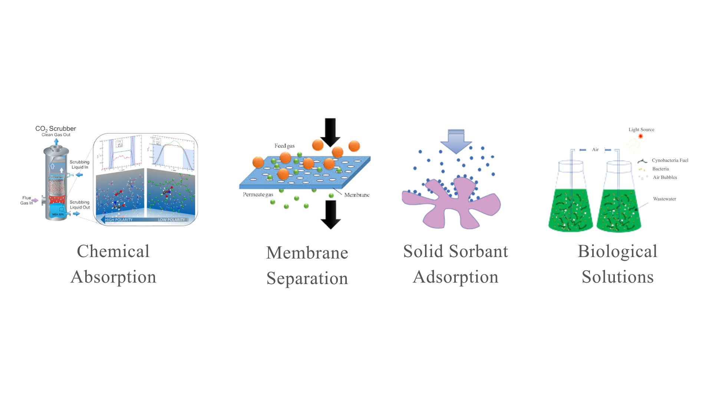
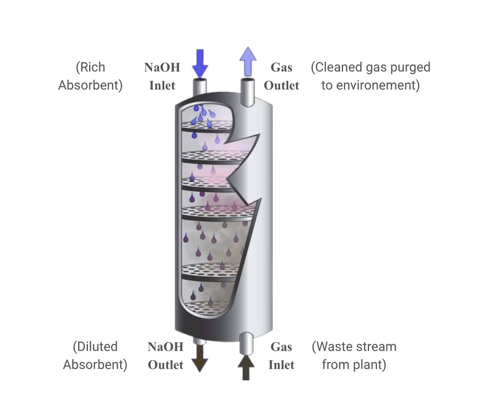
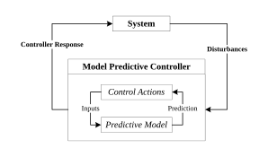

Selection of Case Study & Working Principles
To select a suitable case study for the application of PIML, candidate applications that are of high practical value within chemical engineering were identified. Accordingly, four key pillars were shortlisted: carbon neutrality, clean energy, AI-driven manufacturing processes, and circular economy. The case studies were ranked on a scale of 1 to 5 across industrial relevance, need for advanced predictive modelling, and system complexity, with 5 representing the highest score.
A comprehensive review across these pillars is presented in Figure 2.1.
Based on these considerations, this study focuses on the carbon neutrality pillar as the primary application domain due to its highest ranking among the shortlisted alternatives. Atmospheric carbon dioxide (CO2) concentrations have risen from approximately 280 ppm in the pre-industrial era to over 420 ppm24, primarily driven by fossil fuel combustion and industrial activities. In response, international initiatives such as the Paris Agreement have established targets to reduce global greenhouse gas emissions by 40-45% by 2030 relative to 2010 levels25.
In parallel, national governments are advancing commitments to accelerate industrial decarbonisation. As a major hub for oil refining and petrochemical manufacturing, Jurong Island represents a significant source of CO2 emissions, necessitating the deployment of carbon removal technologies26. To support this transition, the government has allocated SGD 5 billion through the Future Energy Fund in 2024, alongside SGD 800 million to accelerate sustainable industrial solutions.
As such, various CO2 absorption technologies have been developed, including chemical absorption, membrane separation, solid sorbent adsorption and biological solutions27, presented in Figure 2.2. Among these, chemical absorption of CO2 particularly via reactive solvents, also known as chemisorption, remains one of the most mature and widely implemented technologies in industrial gas treatment, accounting for one-third and the majority of all CO2 removal technologies28.

A representative example is notably the packed-bed NaOH-CO2 chemisorption technology displayed in Figure 2.3. In this process, a gas waste stream containing high levels of CO2 enters the column from the bottom, while a liquid NaOH absorbent agent flows downwards from the top. As the two streams move in opposite directions, they come into contact within the column, allowing CO2 to be absorbed into the NaOH liquid and react.

The chemisorption of CO2 in aqueous NaOH is governed by a sequence of acid base reactions. The overall reaction can be expressed as:
As observed, NaOH reacts and removes CO2 to form sodium carbonate (Na2CO3). In which, Na2CO3 further reacts and removes CO2 as shown:
In addition to reaction kinetics, the system behaviour is strongly influenced by mass transfer of CO2 from the gas phase into the NaOH liquid phase, which acts as a prerequisite to the aforementioned chemical reactions. As such the coupled effects of reaction kinetics and mass transfer allow the system to be conceptually divided into three distinct zones within the column: Surface Reaction Zone (SRZ), Interior Reaction Zone (IRZ) and Physical Absorption Zone (PAZ). Depending on the operating conditions, the system may exhibit one, two, or all of these zones as shown in Table 2.1. The complete explanation of the respective zones can be found in Appendix A.
| Zone | Operating Conditions (Concentrations) | CO2 Removal Rate |
|---|---|---|
| Surface Reaction |
CNaOH
>>
CCO2
|
Fastest |
| Interior Reaction |
CNaOH
≈
CCO2
|
Moderate |
| Physical Absorption |
CNaOH
≪
CCO2
|
Slowest |
When subjected to disturbances, the previously defined reaction zones evolve over both time and space, resulting in inherently dynamic system behaviour. Such systems are characterised by strong temporal dependencies and coupled interactions, which remain challenging to capture using conventional FPM due to incomplete physical understanding.
Accurate dynamic modelling is critical for Model Predictive Control (MPC) to stabilise the plant in case of a disturbance. MPC are industrial control systems that rely on predictive models to forecast the future dynamics of key process variables, such as outlet CO2 and NaOH concentration. As such the quality of control action suggested by MPC is highly dependent on the accuracy of the underlying dynamic model. In NaOH-CO2 chemisorption systems, reliable dynamic modelling is essential to prevent exceedance of emission limits and minimise excessive NaOH consumption, thereby ensuring both regulatory compliance and operational performance. A schematic of the working principles of MPC is displayed in Figure 2.4.
